Токио · Уэно · музей
Национальный музей природы и науки в Уэно: от китов и динозавров до японских метеоритов
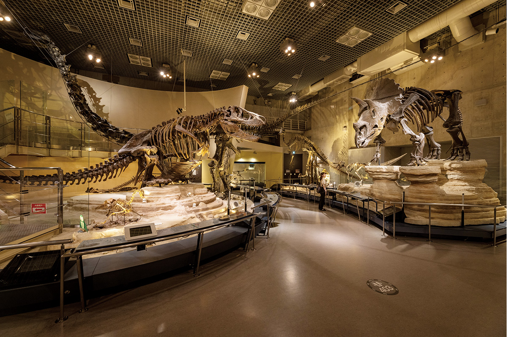
В парке Уэно стоит музей, куда многие приходят не только на временные выставки, но и ради постоянной экспозиции. Около 25 000 экспонатов, почти все подлинные: скелеты динозавров, чучела зверей, метеориты, лодки и приборы, по которым Япония изучала небо и землю.
Музей
Наука под одной крышей
Национальный музей природы и науки основан в 1877 году и остаётся единственным в Японии государственным музеем, который охватывает сразу и естественную историю, и историю техники. В парке Уэно ему принадлежат два здания, «Глобальная галерея» и «Японская галерея». Кроме них у музея есть ботанический сад в Цукубе, исследовательский центр и природный парк в районе Сироканэдай в Токио.
Музей ведёт исследования, собирает и хранит коллекции и показывает их публике. В 2022 году в его фондах было больше 4,9 млн зарегистрированных образцов. В двух галереях в Уэно выставлено около 25 000, и, кроме моллюсков, почти всё здесь подлинное, а не копии. Отсюда и эффект: перед настоящим скелетом стоишь иначе, чем перед муляжом.
Главная мысль постоянной экспозиции звучит как «Ради сосуществования человека и природы». У каждого этажа своя тема, и, переходя с этажа на этаж, невольно думаешь о том, как людям жить рядом с природой дальше.
История музея началась раньше официальной даты. В 1871 году министерство просвещения открыло выставочный зал в Юсима Сэйдо, конфуцианском храме в соседнем районе Юсима, а в 1877 году в Уэно построили новое здание, и этот год считают годом основания. Музей много раз менял название и адрес. Великое землетрясение Канто в 1923 году уничтожило все здания и все коллекции. В 1931 году в Уэно открылось новое здание, нынешняя «Японская галерея», а имя «Национальный музей природы и науки» музей получил в 1949 году. Новый корпус, будущая «Глобальная галерея», полностью открылся в 2004 году, в 2008 году старое здание стало важной культурной ценностью Японии, а в 2015 году обновили северное крыло «Глобальной галереи».
Глобальная галерея
Жизнь на Земле и человек
Тема «Глобальной галереи»: история жизни на Земле и человек. Выставочные залы занимают около 7900 квадратных метров, от третьего подземного этажа до третьего надземного. Здесь рассказывают, как живые существа связаны друг с другом, как жизнь много раз возникала и вымирала, как менялась планета и как накапливал знания человек.
Строгого маршрута нет, ходить можно с любого этажа. Но начать лучше с первого, с зоны «Навигатор по истории Земли», которая связывает все залы галереи. На трёх больших экранах идёт рассказ о космосе, жизни и человеке, и пространство выглядит почти футуристично.
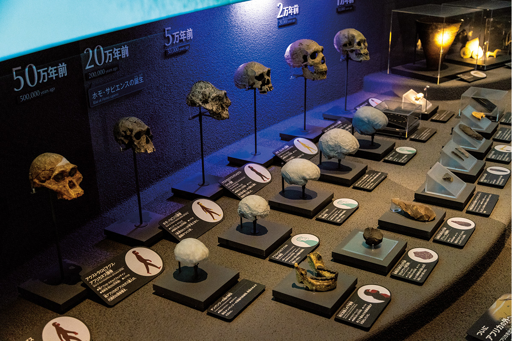
В центре зала стоит аллозавр. Это первый динозавр, чей скелет в Японии выставили целиком, и кажется, будто он молча наблюдает за 13,8 млрд лет истории Вселенной и 4,6 млрд лет истории Земли. Дальше в глубине зала под потолком висит кашалот. Половина его тела сделана моделью, вторая половина показывает настоящий скелет. Такой экспонат первый в мире: у модели воспроизведены глаз, ухо, пупок и задний проход, а голова показывает внутреннее устройство в подробностях.
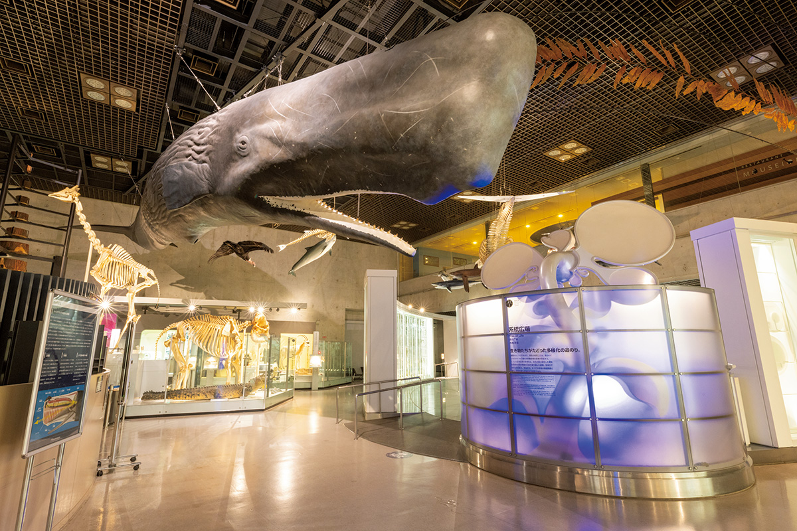
Второй этаж посвящён прошлому, настоящему и будущему науки и техники. Через множество интерактивных экспонатов здесь можно проследить, как развивалась техника в Японии начиная с периода Эдо (1603–1868).
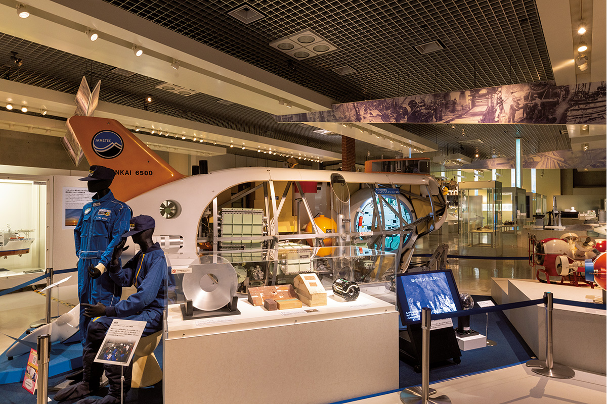
Третий этаж называется «Жизнь, бегущая по земле». Здесь в ряд стоят 276 чучел млекопитающих и птиц, и среди них Фэйфэй и Тонтон, панды, которые когда-то были любимцами зоопарка Уэно.
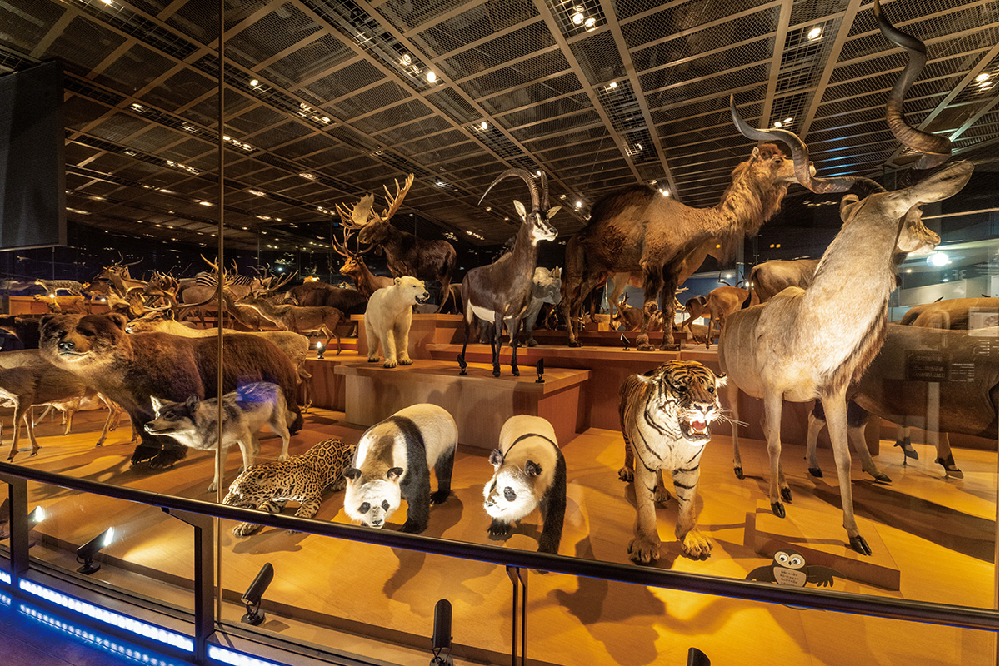
На третьем подземном этаже рассказывают о японских учёных, заложивших основы науки в стране, а ещё о веществах, из которых состоят Вселенная и жизнь, и о законах, которые ими управляют. Есть периодическая таблица, в ячейки которой вложены сами элементы, уголок космоса и раздел о японских лауреатах Нобелевской премии по естественным наукам с их высказываниями.
Второй подземный этаж читает историю Земли по минералам и окаменелостям: перемены климата, происхождение млекопитающих, эволюция человека.
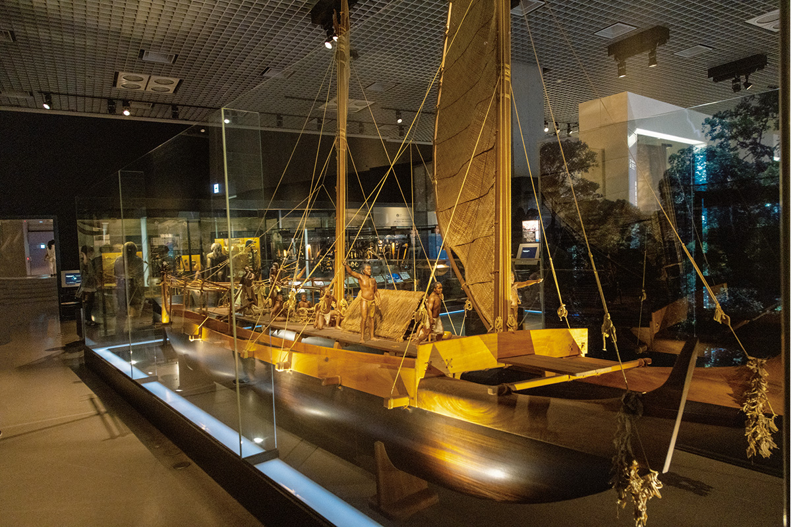
Первый подземный этаж самый популярный: тираннозавр, трицератопс и другие динозавры стоят здесь так тесно, что их размеры чувствуешь по-настоящему. Раз в полчаса свет приглушают, и по стене движутся тени динозавров. Многим нравится и витрина, где сравнивают археоптерикса и человека.
Для экспонатов обеих галерей есть бесплатный многоязычный гид «Kahaku HANDY GUIDE»: пояснения открываются на смартфоне.
Японская галерея
Как возникли японские острова
«Японскую галерею» построили в 1931 году в рамках восстановления после землетрясения Канто. Это массивное здание в стиле неоренессанса, и если посмотреть на него сверху, оно похоже на самолёт, вершину техники того времени. Проект подготовил строительный отдел министерства просвещения.
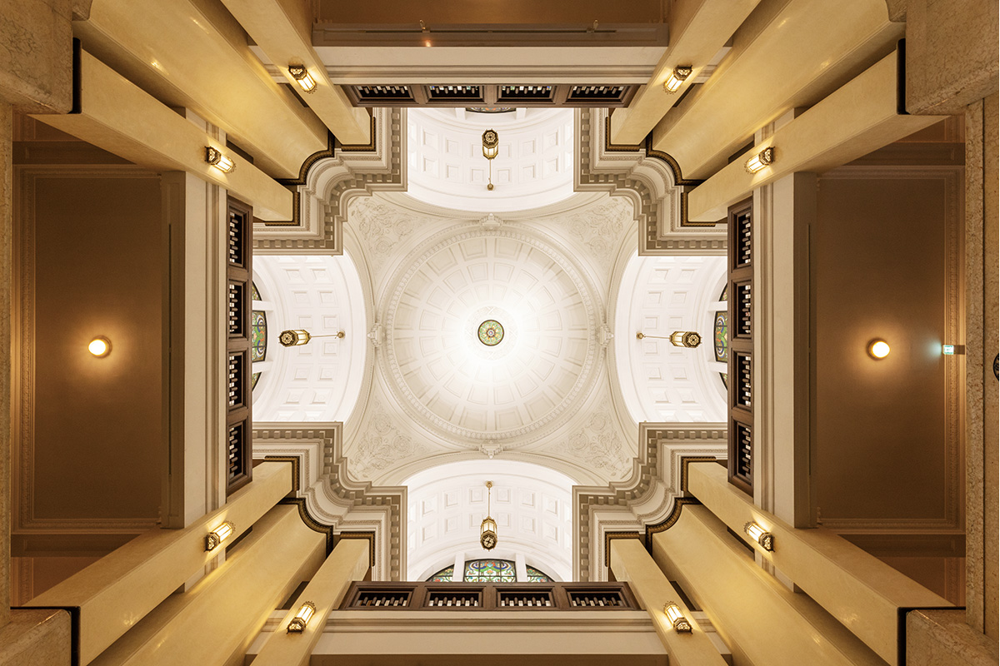
Тема галереи: «Природа японских островов и мы». Окаменелости, минералы, чучела и древние человеческие кости рассказывают, как развивались живые существа Японии, как складывался японский народ и как он жил рядом с природой. Экспозиция выстроена как история: начинать надо с южного крыла третьего этажа и идти по времени.
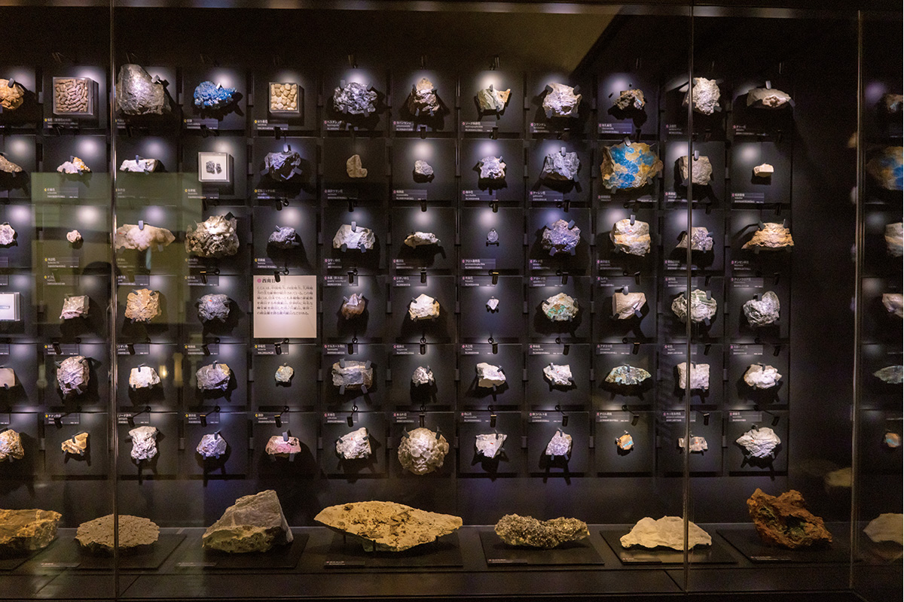
Южное крыло рассматривает японские острова с разных сторон, от геологии до природной среды. Главный экспонат северного крыла, где рассказывают о рождении островов, это окаменелость футабазавра, длинношеего морского ящера. Именно он стал прообразом Пи-сукэ из фильма «Дораэмон: Нобита и динозавр». Его называют лучшей окаменелостью рептилии в Японии, и скелет длиной около 6,5 м выглядит так, будто вот-вот поплывёт.
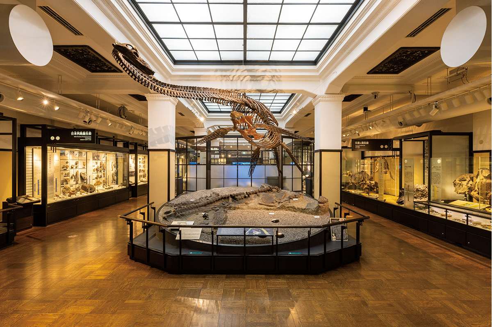
На втором этаже рассказывают, как живые существа, обитающие рядом с японцами, развивались своим путём. Особенно интересен раздел о том, как менялись сами японцы начиная с людей эпох Дзёмон и Яёй. Около 40 000 лет назад предки японцев нашли острова на окраине Восточной Азии и поселились здесь. Показана и мумия человека, похороненного в период Эдо. А ещё здесь чучела двух знаменитых собак: акита-ину Хати, того самого «верного пса Хатико», и сахалинской лайки Дзиро, которая ходила с японской антарктической экспедицией.
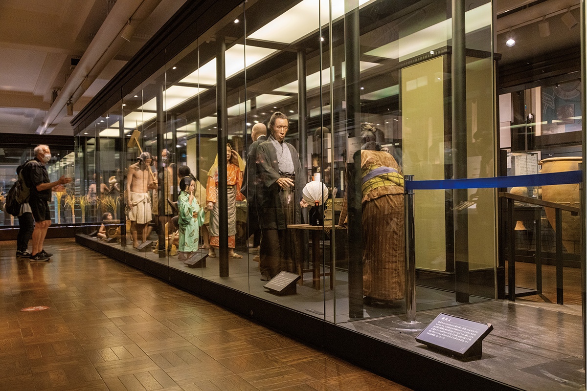
Первый этаж посвящён технике, которой японцы наблюдали природу: небо, землетрясения, время, микромир под микроскопом. Старинные книги, инструменты и приборы, часть которых легла в основу современной промышленности, показывают изобретательность и зоркий взгляд японских мастеров.
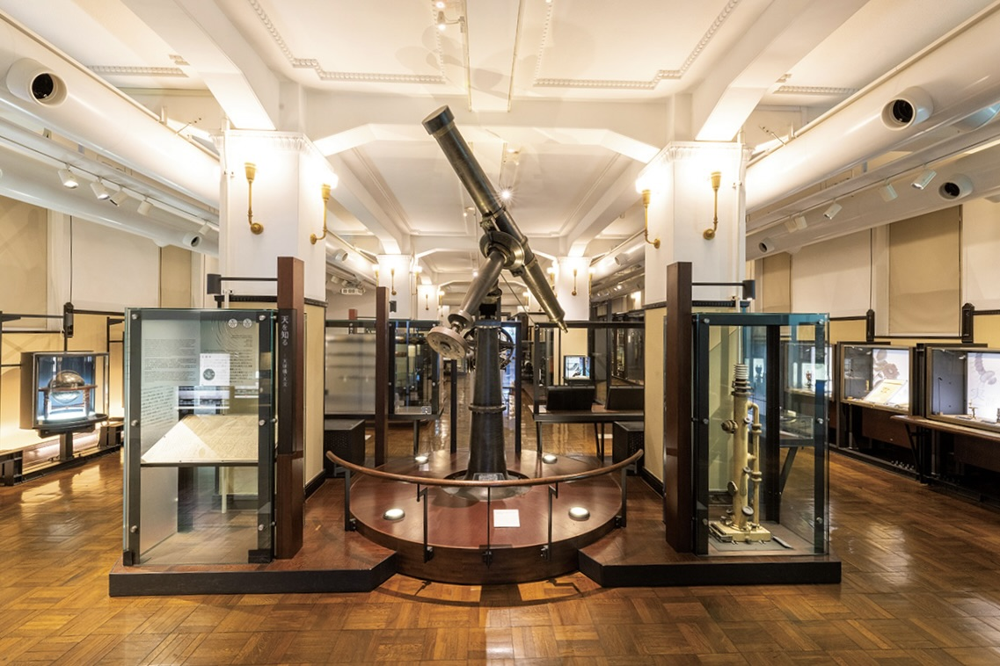
Пройдя путь от рождения островов до наших дней, начинаешь больше думать о будущем. Это и есть та мысль о сосуществовании человека и природы, которую музей предлагает унести с собой.
Ещё
Кино на 360 градусов, лекции и обед с динозавром
В музее работает сферический кинозал «Theater 36○»: изображение окружает зрителя со всех сторон, и возникает чувство полёта и скорости.
Музей проводит занятия для любого возраста: беседы с исследователями, уроки физики, семинары по естественной истории и истории техники для студентов и взрослых. Расписание публикуют на сайте музея.
На промежуточном этаже между первым и вторым в «Глобальной галерее» есть ресторан «Мусэйон», его ведёт известный ресторан Уэно «Сэйёкэн». Многие блюда здесь связаны с музеем.
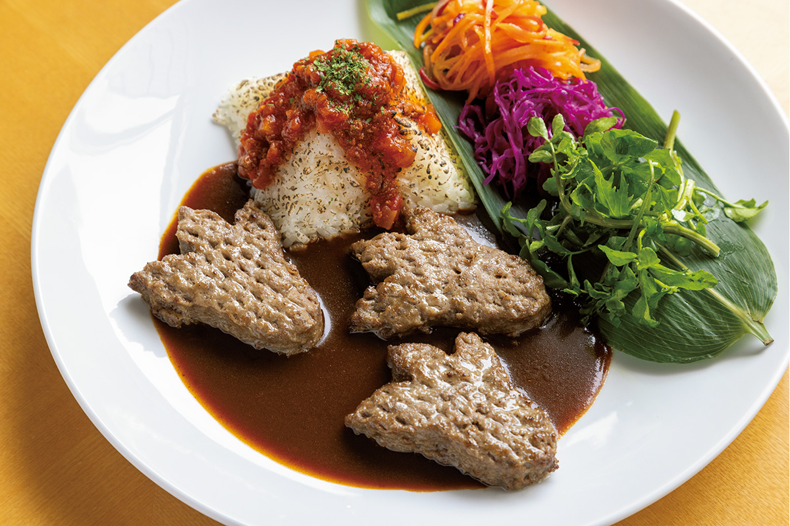
Национальный музей природы и науки
- Адрес
- Токио, район Тайто, Уэно-коэн, 7-20
- Телефон
- +81 50-5541-8600
- Часы работы
- 9:00–17:00, вход до 16:30
- Выходные
- понедельник (если праздник, то следующий день); выходные могут меняться из-за специальных выставок
- Цены / Вход
- 630 иен (2022 год); в 2022 году вход был по предварительной онлайн-записи
- Сайт
- kahaku.go.jp
Ресторан «Мусэйон»
- Адрес
- в здании «Глобальной галереи» музея
- Телефон
- +81 3-3827-2080
- Часы работы
- 10:30–17:00, последний заказ 16:30
- Выходные
- по дням закрытия музея
Сироканэдай
Природный парк при музее
У музея есть ещё одно место в Токио: природный парк в районе Сироканэдай. Он охраняется как природный памятник и как исторический памятник, и здесь можно увидеть, как устроена экосистема.
Природный парк при Национальном музее природы и науки
- Адрес
- Токио, район Минато, Сироканэдай, 5-21-5
- Телефон
- +81 3-3441-7176
- Часы работы
- 9:00–17:00, с сентября по апрель 9:00–16:30, вход за 30 минут до закрытия
- Выходные
- понедельник (если праздник, то следующий день); бывают дополнительные выходные
- Цены / Вход
- 320 иен (2022 год)
Фото: Синсукэ Мацукава.